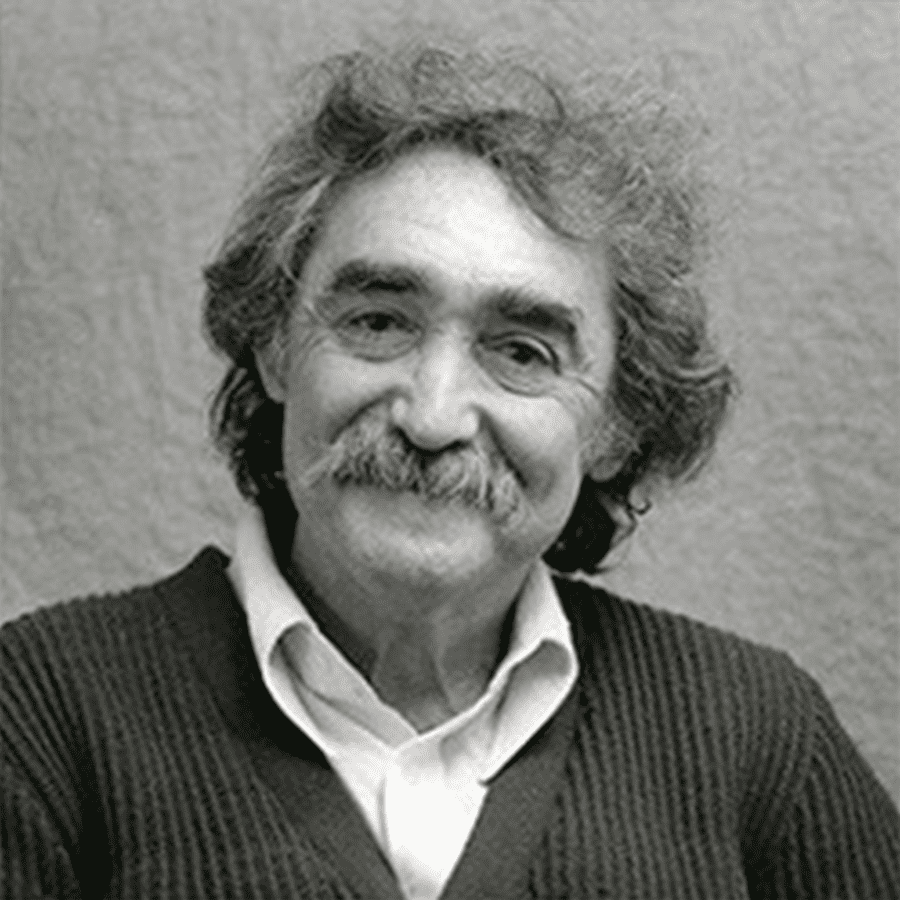

El artista venezolano Jesús Rafael Soto , es considerado el padre del arte cinético.
Su búsqueda constante del movimiento lo llevó a desafiar las posibilidades perceptivas del ojo humano. Soto fue particularmente famoso por sus "penetrables" esculturas dentro de las cuales, las personas pueden caminar e interactuar.
Obtuvo una beca del estado Bolívar para estudiar en la Escuela de Artes Plásticas y Aplicadas de Caracas. En 1950 se trasladó a París.
En 1956 creó sus primeras estructuras cinéticas, como Dinámica del color (1957) y Escrituras (1963). A partir de la década de 1960 diseñó penetrables y obras de integración arquitectónica, como la decoración del interior del edificio de la UNESCO en París (1970), el interior del Centro Nacional de Arte y Cultura Georges Pompidou de París (1976) y numerosos espacios públicos en Caracas.
Entre la gran cantidad de reconocimientos que recibe en vida, el gobierno francés lo distingue en 1968 con la insignia Caballero de las Artes y las Letras. En su honor, en 1973 el gobierno de Venezuela inauguró el Museo Jesús Soto en Ciudad Bolívar. Por su parte, la UNESCO le otorga la medalla Picasso por considerar que su obra ha servido para acercar a los países del mundo.
{kind=link}
{kind=link}
{kind=link}
{kind=link}
{kind=link}